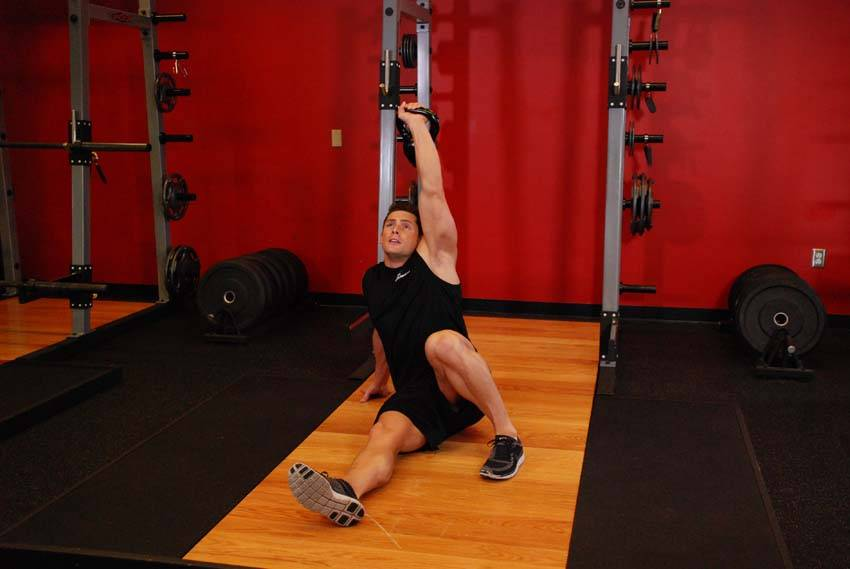

- Lie on your back on the floor and press a kettlebell to the top position by extending the elbow. Bend the knee on the same side as the kettlebell.
- Keeping the kettlebell locked out at all times, pivot to the opposite side and use your non- working arm to assist you in driving forward to the lunge position.
- Using your free hand, push yourself to a seated position, then progressing to your feet. While looking up at the kettlebell, slowly stand up. Reverse the motion back to the starting position and repeat.
This exercise appears in Programmd training programs. Take the quiz to find one for your gym.
Find your program